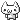
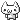

.__ .__ .___
_____ ______ ____ |__||__| ____ _____ _______ __| _/ ____ ____
\__ \ / ___/_/ ___\ | || | / ___\ \__ \ \_ __ \ / __ | _/ __ \ / \
/ __ \_ \___ \ \ \___ | || | / /_/ > / __ \_ | | \// /_/ | \ ___/ | | \
(____ //____ > \___ >|__||__| \___ / (____ / |__| \____ | \___ >|___| /
\/ \/ \/ /_____/ \/ \/ \/ \/
Welcome to the ascii garden! This website is a huge work-in-progress. My name is apt, but some people call me Lin. You can use either.
 If you're looking for the old homepage transferred over from Neocities, go here. This is where most of my content is. Please be patient as I decide exactly how I want my webpage to look!
My repository for SAPARi information, including my server and historical info, can be found here.
If you're a player of my Minecraft server, please send me a direct message wherever you happen to have my info.
I edit Wikipedia as asciigarden. The organizations I am in include FIRST, Girl Scouts, Girls' Inc, and some local amateur radio clubs. I can be reached on Mastodon or by email: my name at ascii.garden

 If you're looking for the old homepage transferred over from Neocities, go here. This is where most of my content is. Please be patient as I decide exactly how I want my webpage to look!
My repository for SAPARi information, including my server and historical info, can be found here.
If you're a player of my Minecraft server, please send me a direct message wherever you happen to have my info.
I edit Wikipedia as asciigarden. The organizations I am in include FIRST, Girl Scouts, Girls' Inc, and some local amateur radio clubs. I can be reached on Mastodon or by email: my name at ascii.garden